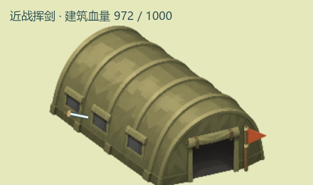
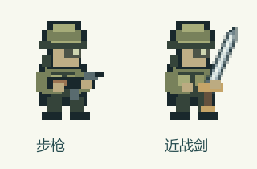
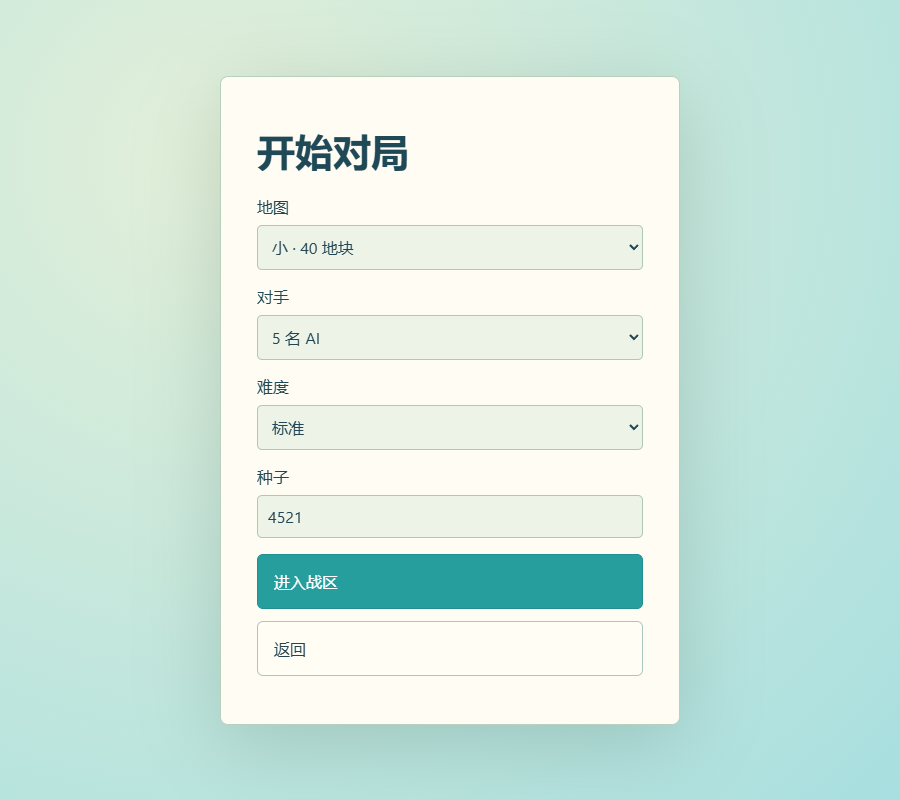
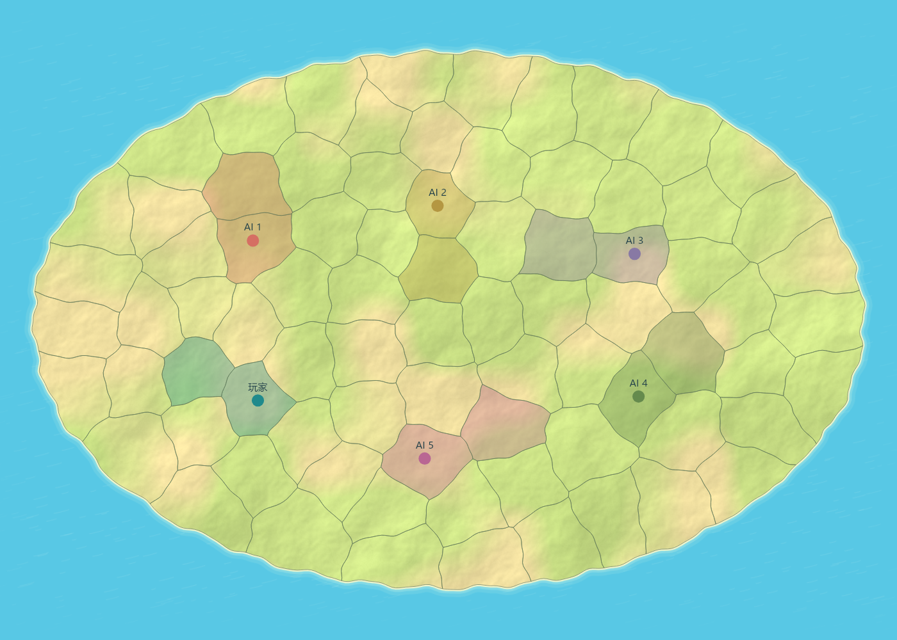

复用当前战斗与 MapScene 士兵绘制逻辑离线导出。建筑正常扣血，普通剑击没有黄色弹丸着弹点。

使用武器画像，不再用大字覆盖人物。

可选 1、2、3、4、5 名 AI；截图示例选中 5 名。

80 地块、5 名 AI、种子 4521。圆点为总部；各方保留相邻金矿，并使用不同颜色。标注仅用于本预览。

带宽估算原始数据：仅为当前模拟的示例快照大小测量，没有实现联机协议，也不是实际网络压测。